Die Erlanger Bergwirte
Herzlich willkommen zur 271. Erlanger Bergkirchweih 2026. Wir wünschen allen Gästen fröhliche, friedliche und unvergessliche Stunden auf dem ältesten Bierfest der Welt.
Die Wirte am Berg
-
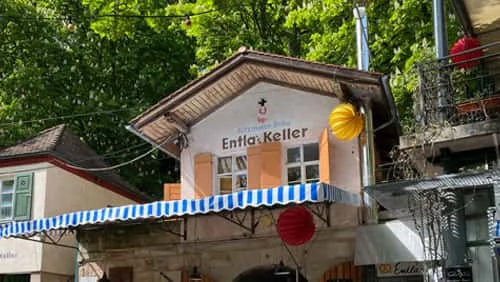
Auf Karte zeigenEntlas Keller
Wir freuen uns, Euch auf dem im Jahr 1797 gegründeten Entlas Keller zu begrüßen. Die Erlanger Bergkirchweih ruft wieder und das ganze Team freut sich auf Euch!
-
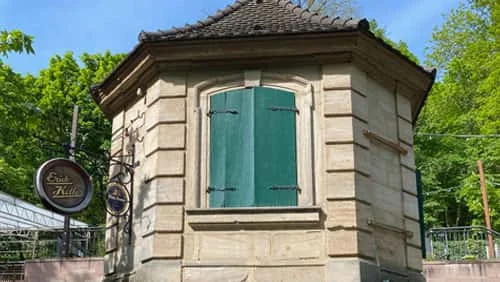
Auf Karte zeigenErich Keller
Wir freuen uns, Euch auf dem im Jahr 1718 gegründeten Erich Keller zu begrüßen. Die Erlanger Bergkirchweih ruft wieder und das ganze Team freut sich auf Euch!
-
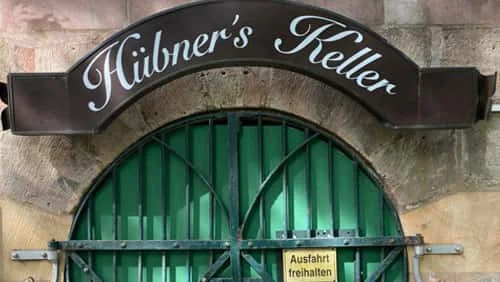
Auf Karte zeigenHübners Keller
Wir freuen uns, Euch auf dem im Jahr 1858 gegründeten Hübners Keller zu begrüßen. Die Erlanger Bergkirchweih ruft wieder und das ganze Team freut sich auf Euch!
-
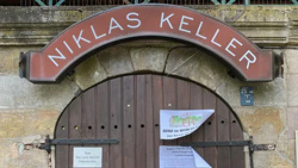
Niklas Keller
Wir freuen uns, Euch auf dem im Jahr 1866 gegründeten Niklas Keller zu begrüßen. Die Erlanger Bergkirchweih ruft wieder und das ganze Team freut sich auf Euch!
Aktuell keine Reservierung möglichAuf Karte zeigen -
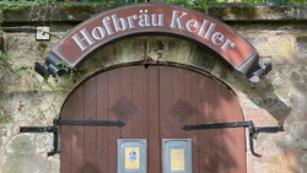
Auf Karte zeigenHofbräu Keller
Wir freuen uns, Euch auf dem im Jahr 1729 gegründeten Hofbräu Keller zu begrüßen. Die Erlanger Bergkirchweih ruft wieder und das ganze Team freut sich auf Euch!
-
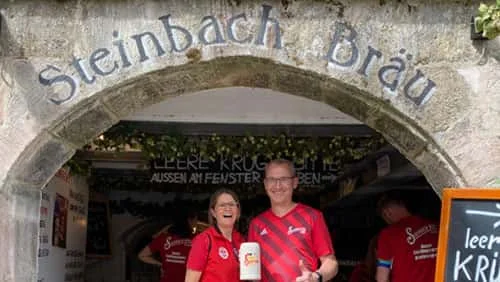
Auf Karte zeigenSteinbach Keller
Wir freuen uns, Euch auf dem im Jahr 1861 gegründeten Steinbach Keller zu begrüßen. Die Erlanger Bergkirchweih ruft wieder und das ganze Team freut sich auf Euch!
-
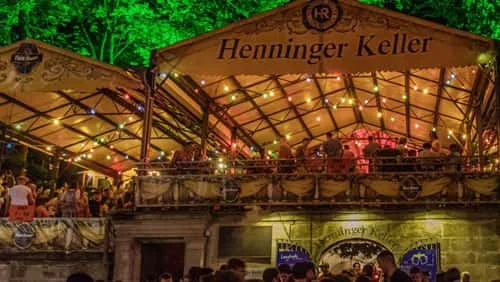
Auf Karte zeigenHenninger Keller
Wir freuen uns, Euch auf dem im Jahr 1848 gegründeten Henninger Keller zu begrüßen. Die Erlanger Bergkirchweih ruft wieder und das ganze Team freut sich auf Euch!
-
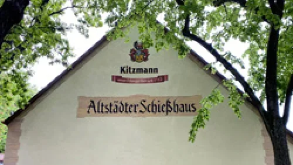
Auf Karte zeigenAltstädter Schießhaus
Wir freuen uns, Euch am Geburtsort der Erlanger Bergkirchweih, dem Altstädter Schießhaus zu begrüßen. Der Berg ruft wieder und das ganze Team freut sich auf Euch!
-
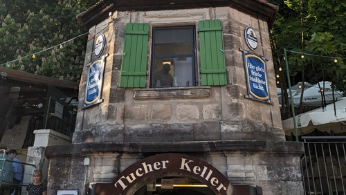
Auf Karte zeigenStriezi Keller
Wir freuen uns, Euch auf dem im Jahr 1729 gegründeten Tucher Keller zu begrüßen. Die Erlanger Bergkirchweih ruft wieder und das ganze Team freut sich auf Euch!
-
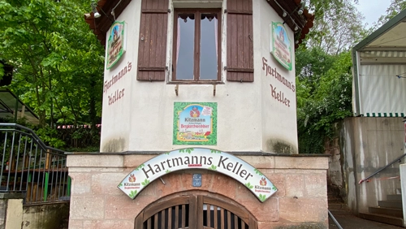
Auf Karte zeigenHartmanns Keller
Wir freuen uns, Euch auf dem im Jahr 1886 gegründeten Hartmanns Keller zu begrüßen. Die Erlanger Bergkirchweih ruft wieder und das ganze Team freut sich auf Euch!
-
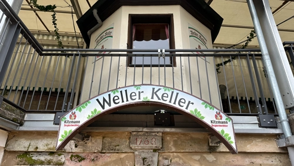
Auf Karte zeigenWeller Keller
Wir freuen uns, Euch auf dem im Jahr 1768 gegründeten Weller Keller zu begrüßen. Die Erlanger Bergkirchweih ruft wieder und das ganze Team freut sich auf Euch!
-
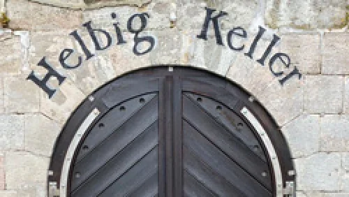
Auf Karte zeigenHelbig Keller
Wir freuen uns, Euch auf dem im Jahr 1861 gegründeten Helbig Keller zu begrüßen. Die Erlanger Bergkirchweih ruft wieder und das ganze Team freut sich auf Euch!
-
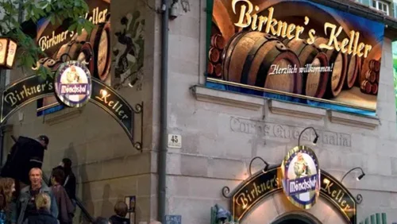
Auf Karte zeigenBirkners Keller
Wir freuen uns, Euch auf dem im Jahr 1823 gegründeten Birkners Keller zu begrüßen. Die Erlanger Bergkirchweih ruft wieder und das ganze Team freut sich auf Euch!
Brauereien und Veranstalter
-
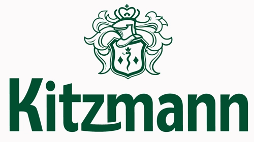
Kitzmann Bier
Wir freuen uns, euch mit dem im Jahr 1755 gegründete Kitzmann Bier zu begrüßen. Die Erlanger Bergkirchweih ruft wieder und das ganze Team freut sich auf Euch!
-
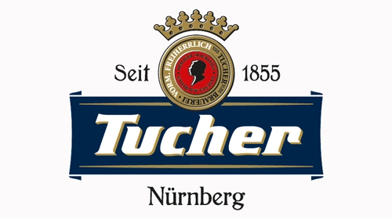
Tucher Privatbrauerei
Wir freuen uns, euch mit dem im Jahr 1855 gegründeten Tucher Bier zu begrüßen. Die Erlanger Bergkirchweih ruft wieder und das ganze Team freut sich auf Euch!
-
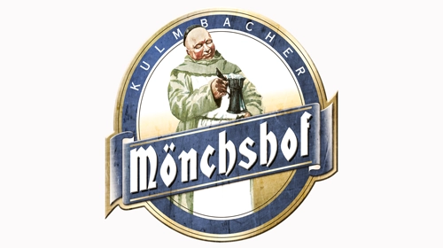
Mönchshof Festbier
Wir freuen uns, euch mit dem im Jahr 1885 gegründeten Mönchshof Festbier zu begrüßen. Die Erlanger Bergkirchweih ruft wieder und das ganze Team freut sich auf Euch!
-
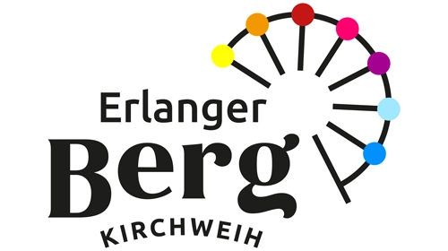
Stadt Erlangen
Wir freuen uns, euch gemeinsam mit der Stadt Erlangen zu begrüßen. Die Erlanger Bergkirchweih ruft wieder und das ganze Team freut sich auf Euch!